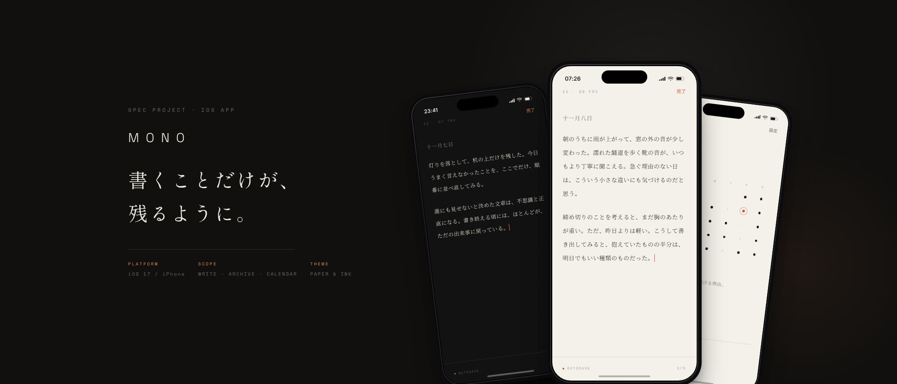
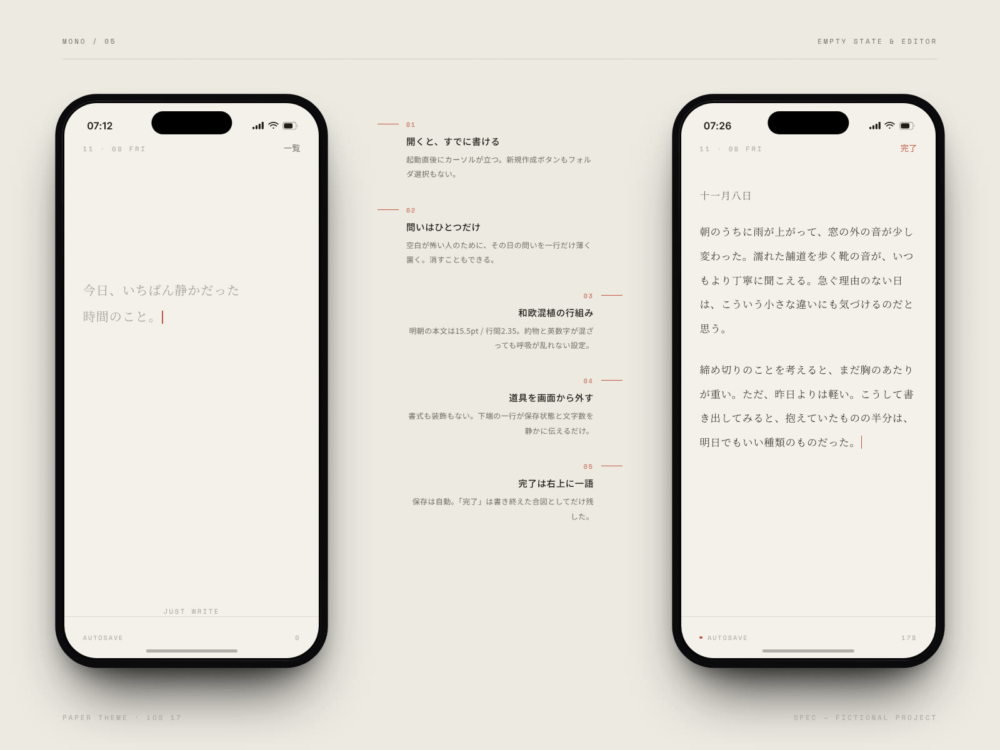
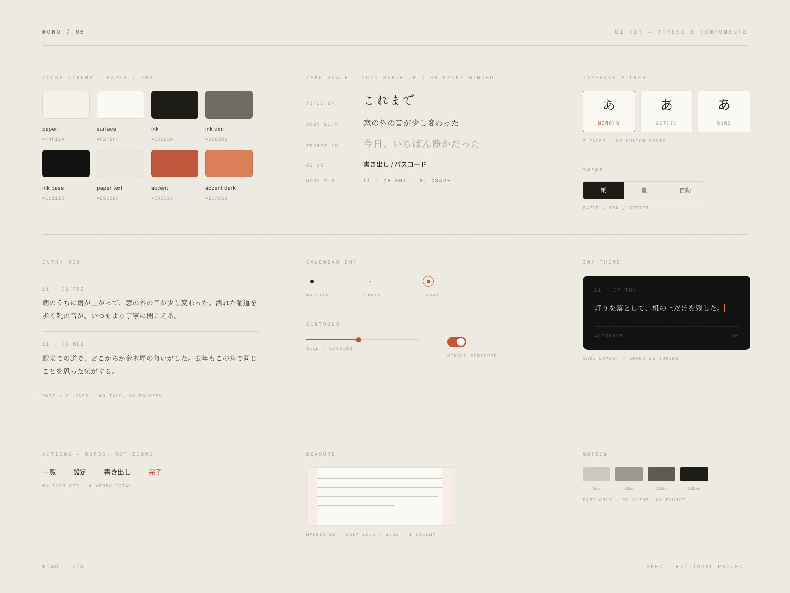
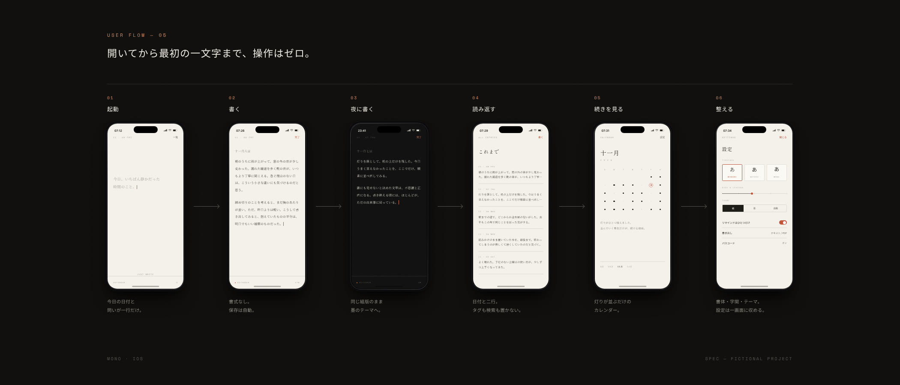

書くことに集中するためのジャーナリングアプリ。日付とテキストだけを残し、開いてから最初の一文字までの操作をゼロにした——紙と墨、2つのテーマで設計している。
架空のプロジェクトです。実在のクライアント・実績ではありません。

ノートアプリは整理の道具が増えるほど、書き始めが遠くなる。タグ、フォルダ、テンプレート——準備に時間を取られて、肝心の一行が出てこない。Mono は逆から設計した。あるのは日付とテキストだけのiOSアプリのコンセプトである。
中心に置いた問いは「開いてから最初の一文字までに、いくつ操作が要るか」。答えはゼロ。起動した時点でカーソルは立っていて、新規作成ボタンもフォルダ選択も経由しない。空白が重い日のために、その日の問いを一行だけ薄く置いた。


テーマは紙（温かみのあるオフホワイト）と墨（深いダーク）の2つ。同じ組版のままトークンだけを反転させ、昼と夜で読み味が変わらないようにした。本文は明朝15.5pt / 行間2.35、左右マージン28pt の一段組み。和文と英数字が混ざっても呼吸が乱れない設定を基準値として固定している。
アイコンは持たず、操作は「一覧」「設定」「書き出し」「完了」の4語だけ。習慣化の仕掛けも書いた日だけ静かに灯るカレンダードットひとつに限り、連続日数のバッジも通知攻勢も置かない。モーションはフェードのみ、160ms。

設計したのは空の状態 / エディタ（紙・墨） / 一覧 / カレンダー / 設定の6画面。あわせて紙と墨のカラートークン、書体ピッカー、本文の組版指定、カレンダードットのコンポーネントシートと、ユーザーフローのボードを制作した。
本ページは構想（Spec）です。画面に掲載している日記の文章はこの案のために書き下ろしたもので、実在の人物や出来事とは関係ありません。効果・売上・利用者数などの実績値は一切掲載していません。